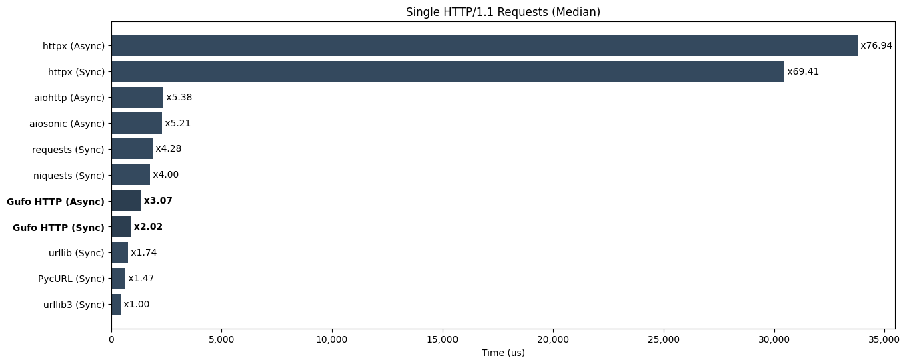
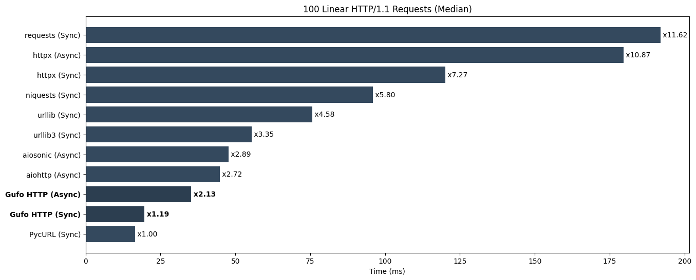
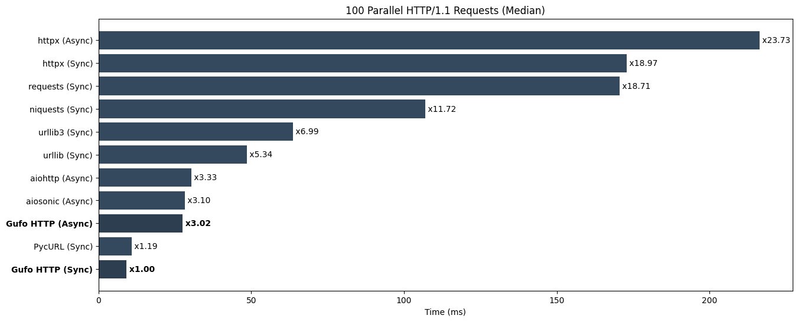
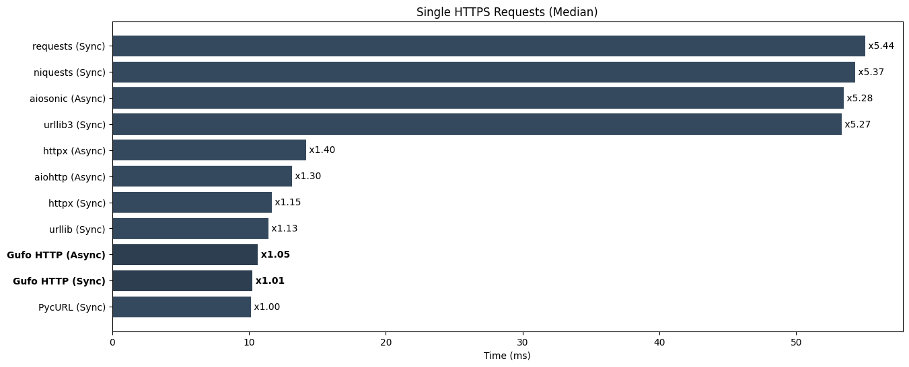
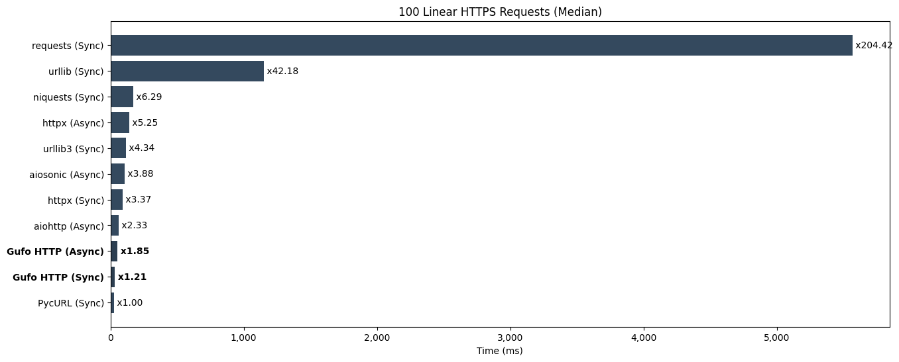
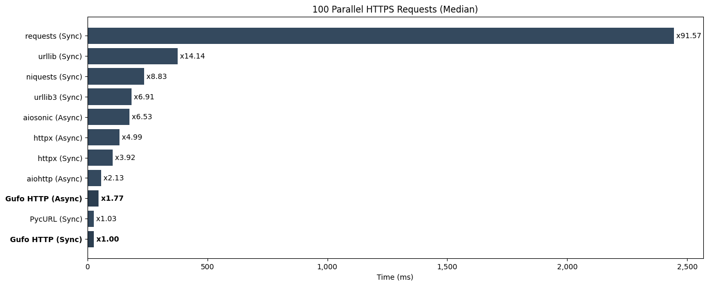

Python HTTP Clients Benchmark¶
Disclaimer
All following information is provided only for reference. These tests are performed by Gufo Labs to estimate the performance of Gufo HTTP against major competitors, so they cannot be considered independent and unbiased.
Note
Although performance is an absolute requirement for Gufo Stack, other factors such as maturity, community, features, examples, and existing code base should also be considered.
Abstract¶
This benchmark evaluates several Python HTTP client libraries:
- Gufo HTTP (current version)
- aiohttp (3.9.3)
- aiosonic (0.18.0)
- httpx (0.27)
- requests (2.31.0)
- niquests (3.5.2)
- PycURL (7.45.3)
- urllib from Python standard library
- urllib3 (2.2.1)
The evaluation covers the following aspects:
- Performance in synchronous (blocking) mode, if supported.
- Performance in asynchronous (non-blocking) mode, if supported.
- Performance in plain-text (HTTP) and encrypted (HTTPS) modes.
- Ability to maintain pools of connections.
- The efficiency of the resolver.
- Ability to release GIL in multi-threaded applications.
All benchmarks are performed against a local nginx installation
using wrapper, provided by gufo.http.httpd.
The benchmarking environment utilizes an AWS EC2 t2.xlarge (64-bit) instance running Debian 12. Median values are used for benchmark ranking.
Preparing¶
Start clear AWS EC2 t2.xlarge (64 bit) instance with Debian 12.
Prepare node:
sudo apt-get update
sudo apt-get install --yes git python3.11-venv
python3 -m venv bench
cd bench
. bin/activate
Clone repo:
Install local nginx:
Install dependencies:
HTTP/1.1 Requests¶
Single Requests¶
Perform http requests to read 1kb text file. This test evaluates:
- The cost of client's initialization.
- The efficiency of the network code.
- The efficiency of the resolver.
- The efficiency HTTP/1.1 parser.
Run tests:
Results (lower is better)
================================================================= test session starts =================================================================
platform linux -- Python 3.11.2, pytest-7.4.3, pluggy-1.4.0
benchmark: 4.0.0 (defaults: timer=time.perf_counter disable_gc=False min_rounds=5 min_time=0.000005 max_time=1.0 calibration_precision=10 warmup=False warmup_iterations=100000)
rootdir: /home/admin/bench/gufo_http
plugins: anyio-4.3.0, benchmark-4.0.0
collected 11 items
benchmarks/test_single_x100_1k.py ........... [100%]
----------------------------------------------------------------------------------------------- benchmark: 11 tests -----------------------------------------------------------------------------------------------
Name (time in us) Min Max Mean StdDev Median IQR Outliers OPS Rounds Iterations
-------------------------------------------------------------------------------------------------------------------------------------------------------------------------------------------------------------------
test_urllib3_sync 554.4570 (1.0) 1,536.1650 (1.83) 632.6178 (1.0) 62.9339 (1.73) 621.2800 (1.0) 36.4180 (1.0) 51;43 1,580.7332 (1.0) 715 1
test_pycurl_sync 629.4390 (1.14) 837.4340 (1.0) 696.9158 (1.10) 42.7311 (1.17) 685.7915 (1.10) 53.6650 (1.47) 20;2 1,434.8935 (0.91) 68 1
test_urllib_sync 689.3360 (1.24) 930.5660 (1.11) 771.1619 (1.22) 36.3905 (1.0) 763.9255 (1.23) 41.8110 (1.15) 168;25 1,296.7445 (0.82) 704 1
test_gufo_http_sync 1,028.8110 (1.86) 1,492.4360 (1.78) 1,147.2073 (1.81) 73.6414 (2.02) 1,129.8320 (1.82) 87.5698 (2.40) 13;2 871.6820 (0.55) 67 1
test_gufo_http_async 1,305.4320 (2.35) 2,491.2770 (2.97) 1,440.9713 (2.28) 121.9038 (3.35) 1,413.2970 (2.27) 89.5060 (2.46) 27;19 693.9763 (0.44) 390 1
test_niquests_sync 1,566.6530 (2.83) 21,821.0800 (26.06) 1,849.7786 (2.92) 966.5830 (26.56) 1,708.1240 (2.75) 133.7685 (3.67) 7;98 540.6052 (0.34) 456 1
test_requests_sync 1,795.1610 (3.24) 2,449.7940 (2.93) 1,929.5940 (3.05) 133.8849 (3.68) 1,884.6200 (3.03) 113.1722 (3.11) 6;3 518.2437 (0.33) 47 1
test_aiosonic_async 2,052.7380 (3.70) 3,719.5100 (4.44) 2,328.1077 (3.68) 252.0696 (6.93) 2,261.1500 (3.64) 120.4875 (3.31) 41;41 429.5334 (0.27) 397 1
test_aiohttp_async 2,281.1770 (4.11) 8,044.2500 (9.61) 2,471.1011 (3.91) 339.5952 (9.33) 2,441.3350 (3.93) 95.5642 (2.62) 3;8 404.6779 (0.26) 323 1
test_httpx_sync 42,599.5430 (76.83) 57,718.0800 (68.92) 44,626.5008 (70.54) 3,823.4559 (105.07) 43,551.6350 (70.10) 390.4130 (10.72) 2;7 22.4082 (0.01) 22 1
test_httpx_async 45,008.0350 (81.17) 55,920.3020 (66.78) 47,489.2551 (75.07) 2,944.8098 (80.92) 46,456.6860 (74.78) 2,560.7410 (70.32) 2;2 21.0574 (0.01) 18 1
-------------------------------------------------------------------------------------------------------------------------------------------------------------------------------------------------------------------
Legend:
Outliers: 1 Standard Deviation from Mean; 1.5 IQR (InterQuartile Range) from 1st Quartile and 3rd Quartile.
OPS: Operations Per Second, computed as 1 / Mean
================================================================= 11 passed in 9.41s ==================================================================

Lower is better100 Linear Requests¶
Perform set of 100 linear http requests to read 1kb text file using single client session whenever possible. This test evaluates:
- The efficiency of the network code.
- The efficency of the HTTP/1.1 parser.
- An ability to maintain connection pools.
Run tests:
Results (lower is better)
================================================================= test session starts =================================================================
platform linux -- Python 3.11.2, pytest-7.4.3, pluggy-1.4.0
benchmark: 4.0.0 (defaults: timer=time.perf_counter disable_gc=False min_rounds=5 min_time=0.000005 max_time=1.0 calibration_precision=10 warmup=False warmup_iterations=100000)
rootdir: /home/admin/bench/gufo_http
plugins: anyio-4.3.0, benchmark-4.0.0
collected 11 items
benchmarks/test_linear_x100_1k.py ........... [100%]
----------------------------------------------------------------------------------- benchmark: 11 tests ------------------------------------------------------------------------------------
Name (time in ms) Min Max Mean StdDev Median IQR Outliers OPS Rounds Iterations
--------------------------------------------------------------------------------------------------------------------------------------------------------------------------------------------
test_pycurl_sync 15.7209 (1.0) 17.4826 (1.0) 16.5177 (1.0) 0.4374 (1.0) 16.5259 (1.0) 0.4625 (1.0) 18;2 60.5410 (1.0) 60 1
test_gufo_http_sync 17.8568 (1.14) 20.7740 (1.19) 19.4510 (1.18) 0.7784 (1.78) 19.6666 (1.19) 1.0538 (2.28) 19;0 51.4113 (0.85) 52 1
test_gufo_http_async 32.0142 (2.04) 36.6345 (2.10) 35.0291 (2.12) 1.1316 (2.59) 35.1273 (2.13) 1.2688 (2.74) 9;1 28.5477 (0.47) 30 1
test_aiohttp_async 42.9462 (2.73) 46.6140 (2.67) 45.0808 (2.73) 0.8582 (1.96) 44.8978 (2.72) 1.0455 (2.26) 5;1 22.1824 (0.37) 22 1
test_aiosonic_async 46.4653 (2.96) 49.4529 (2.83) 47.7811 (2.89) 0.6290 (1.44) 47.7124 (2.89) 0.5660 (1.22) 4;2 20.9288 (0.35) 21 1
test_urllib3_sync 54.1701 (3.45) 56.8959 (3.25) 55.3582 (3.35) 0.7389 (1.69) 55.4057 (3.35) 1.1371 (2.46) 5;0 18.0642 (0.30) 18 1
test_urllib_sync 73.9660 (4.70) 79.5802 (4.55) 75.9264 (4.60) 1.4029 (3.21) 75.6989 (4.58) 1.2797 (2.77) 3;1 13.1707 (0.22) 14 1
test_niquests_sync 94.7829 (6.03) 115.4204 (6.60) 97.9240 (5.93) 5.9087 (13.51) 95.8562 (5.80) 2.3509 (5.08) 1;1 10.2120 (0.17) 11 1
test_httpx_sync 116.1272 (7.39) 123.0537 (7.04) 119.6039 (7.24) 2.2205 (5.08) 120.0800 (7.27) 2.6723 (5.78) 4;0 8.3609 (0.14) 9 1
test_httpx_async 174.0273 (11.07) 180.2973 (10.31) 177.9930 (10.78) 3.0217 (6.91) 179.6829 (10.87) 5.8687 (12.69) 2;0 5.6182 (0.09) 6 1
test_requests_sync 189.3613 (12.05) 194.5671 (11.13) 191.7294 (11.61) 1.9597 (4.48) 191.9551 (11.62) 3.1663 (6.85) 3;0 5.2157 (0.09) 6 1
--------------------------------------------------------------------------------------------------------------------------------------------------------------------------------------------
Legend:
Outliers: 1 Standard Deviation from Mean; 1.5 IQR (InterQuartile Range) from 1st Quartile and 3rd Quartile.
OPS: Operations Per Second, computed as 1 / Mean
================================================================= 11 passed in 15.62s =================================================================

Lower is better100 Parallel Requests¶
Perform 100 HTTP/1.1 requests to read 1kb text file with concurrency of 4 maintaininng single client session per thread/coroutine.
- The efficiency of the network code.
- The efficency of the HTTP/1.1 parser.
- An ability to maintain connection pools.
- Granularity of the internal locks.
- Ability to release GIL when runnning native code.
Run tests:
Results (lower is better)
================================================================= test session starts =================================================================
platform linux -- Python 3.11.2, pytest-7.4.3, pluggy-1.4.0
benchmark: 4.0.0 (defaults: timer=time.perf_counter disable_gc=False min_rounds=5 min_time=0.000005 max_time=1.0 calibration_precision=10 warmup=False warmup_iterations=100000)
rootdir: /home/admin/bench/gufo_http
plugins: anyio-4.3.0, benchmark-4.0.0
collected 11 items
benchmarks/test_p4_x100_1k.py ........... [100%]
------------------------------------------------------------------------------------ benchmark: 11 tests -------------------------------------------------------------------------------------
Name (time in ms) Min Max Mean StdDev Median IQR Outliers OPS Rounds Iterations
----------------------------------------------------------------------------------------------------------------------------------------------------------------------------------------------
test_gufo_http_sync 8.0439 (1.0) 12.3677 (1.02) 9.9901 (1.0) 0.7297 (1.11) 9.9671 (1.0) 0.8344 (1.17) 16;5 100.0993 (1.0) 76 1
test_pycurl_sync 8.4782 (1.05) 12.1379 (1.0) 10.4156 (1.04) 0.8120 (1.24) 10.4619 (1.05) 1.0731 (1.51) 29;0 96.0097 (0.96) 90 1
test_gufo_http_async 21.6504 (2.69) 24.3966 (2.01) 22.8209 (2.28) 0.6571 (1.0) 22.7816 (2.29) 0.7117 (1.0) 14;2 43.8195 (0.44) 39 1
test_aiosonic_async 34.8526 (4.33) 39.4812 (3.25) 36.8918 (3.69) 1.1007 (1.68) 37.0412 (3.72) 1.4879 (2.09) 7;0 27.1063 (0.27) 26 1
test_aiohttp_async 38.7963 (4.82) 50.5832 (4.17) 40.5610 (4.06) 2.3938 (3.64) 39.8064 (3.99) 2.0563 (2.89) 1;1 24.6542 (0.25) 24 1
test_urllib_sync 44.0200 (5.47) 48.4414 (3.99) 46.0278 (4.61) 0.9189 (1.40) 45.9976 (4.61) 1.1174 (1.57) 4;1 21.7260 (0.22) 22 1
test_urllib3_sync 59.5702 (7.41) 62.8944 (5.18) 60.6641 (6.07) 0.9540 (1.45) 60.3036 (6.05) 1.1052 (1.55) 4;1 16.4842 (0.16) 17 1
test_niquests_sync 103.6997 (12.89) 127.1946 (10.48) 107.7241 (10.78) 6.9286 (10.54) 105.7414 (10.61) 2.0290 (2.85) 1;1 9.2830 (0.09) 10 1
test_requests_sync 169.1568 (21.03) 173.9227 (14.33) 171.3491 (17.15) 1.9588 (2.98) 170.8775 (17.14) 3.7797 (5.31) 3;0 5.8360 (0.06) 6 1
test_httpx_sync 228.8940 (28.46) 240.2867 (19.80) 233.2785 (23.35) 5.2410 (7.98) 229.9074 (23.07) 8.6472 (12.15) 1;0 4.2867 (0.04) 5 1
test_httpx_async 289.7245 (36.02) 303.9310 (25.04) 296.9236 (29.72) 6.8107 (10.37) 296.9415 (29.79) 13.3072 (18.70) 2;0 3.3679 (0.03) 5 1
----------------------------------------------------------------------------------------------------------------------------------------------------------------------------------------------
Legend:
Outliers: 1 Standard Deviation from Mean; 1.5 IQR (InterQuartile Range) from 1st Quartile and 3rd Quartile.
OPS: Operations Per Second, computed as 1 / Mean
================================================================= 11 passed in 15.82s =================================================================

Lower is betterHTTPS Requests¶
Single Requests¶
Perform HTTP/2 requests to read 1kb text file. This test evaluates:
- The cost of client's initialization.
- The efficiency of the network code.
- The efficiency HTTP/1.1 or HTTP/2 parser.
- The efficency of the crypto.
- The efficiency of the resolver.
Run tests:
Results (lower is better)
================================================================= test session starts =================================================================
platform linux -- Python 3.11.2, pytest-7.4.3, pluggy-1.4.0
benchmark: 4.0.0 (defaults: timer=time.perf_counter disable_gc=False min_rounds=5 min_time=0.000005 max_time=1.0 calibration_precision=10 warmup=False warmup_iterations=100000)
rootdir: /home/admin/bench/gufo_http
plugins: anyio-4.3.0, benchmark-4.0.0
collected 11 items
benchmarks/test_https_single_x100_1k.py ........... [100%]
--------------------------------------------------------------------------------- benchmark: 11 tests ----------------------------------------------------------------------------------
Name (time in ms) Min Max Mean StdDev Median IQR Outliers OPS Rounds Iterations
----------------------------------------------------------------------------------------------------------------------------------------------------------------------------------------
test_pycurl_sync 10.0175 (1.0) 12.0872 (1.0) 10.2290 (1.0) 0.4147 (1.10) 10.1222 (1.0) 0.1027 (1.0) 3;4 97.7609 (1.0) 62 1
test_gufo_http_sync 10.0597 (1.00) 13.0244 (1.08) 10.4489 (1.02) 0.5979 (1.59) 10.2685 (1.01) 0.2163 (2.11) 6;9 95.7036 (0.98) 73 1
test_gufo_http_async 10.3528 (1.03) 13.2080 (1.09) 10.7742 (1.05) 0.4577 (1.22) 10.6623 (1.05) 0.2691 (2.62) 4;4 92.8143 (0.95) 85 1
test_urllib_sync 11.2151 (1.12) 20.4371 (1.69) 11.6105 (1.14) 1.0735 (2.86) 11.4075 (1.13) 0.1948 (1.90) 4;5 86.1292 (0.88) 83 1
test_httpx_sync 11.4543 (1.14) 14.0466 (1.16) 11.8267 (1.16) 0.4756 (1.27) 11.6695 (1.15) 0.2974 (2.90) 8;7 84.5546 (0.86) 79 1
test_aiohttp_async 12.9571 (1.29) 15.0958 (1.25) 13.3663 (1.31) 0.5476 (1.46) 13.1705 (1.30) 0.2873 (2.80) 2;2 74.8148 (0.77) 19 1
test_httpx_async 13.8272 (1.38) 15.5035 (1.28) 14.2621 (1.39) 0.3758 (1.0) 14.1863 (1.40) 0.3401 (3.31) 7;3 70.1158 (0.72) 42 1
test_urllib3_sync 52.2947 (5.22) 55.5100 (4.59) 53.5159 (5.23) 0.8129 (2.16) 53.3167 (5.27) 0.8969 (8.73) 5;1 18.6861 (0.19) 20 1
test_aiosonic_async 52.5721 (5.25) 59.7053 (4.94) 53.8514 (5.26) 1.5025 (4.00) 53.4758 (5.28) 0.7073 (6.89) 1;1 18.5696 (0.19) 19 1
test_niquests_sync 53.1531 (5.31) 55.9122 (4.63) 54.2606 (5.30) 0.7590 (2.02) 54.3079 (5.37) 0.8548 (8.32) 7;1 18.4296 (0.19) 19 1
test_requests_sync 53.3831 (5.33) 55.6010 (4.60) 54.8199 (5.36) 0.6931 (1.84) 55.0437 (5.44) 1.0851 (10.57) 7;0 18.2415 (0.19) 17 1
----------------------------------------------------------------------------------------------------------------------------------------------------------------------------------------
Legend:
Outliers: 1 Standard Deviation from Mean; 1.5 IQR (InterQuartile Range) from 1st Quartile and 3rd Quartile.
OPS: Operations Per Second, computed as 1 / Mean
========================================================== 11 passed, 45 warnings in 15.69s ===========================================================

Lower is better100 Linear Requests¶
Perform set of 100 linear HTTPS requests to read 1kb text file using single client session whenever possible. This test evaluates:
- The efficiency of the network code.
- The efficency of the HTTP/1.1 parser.
- An ability to maintain connection pools.
- The efficency of the crypto.
Run tests:
Results (lower is better)
================================================================= test session starts =================================================================
platform linux -- Python 3.11.2, pytest-7.4.3, pluggy-1.4.0
benchmark: 4.0.0 (defaults: timer=time.perf_counter disable_gc=False min_rounds=5 min_time=0.000005 max_time=1.0 calibration_precision=10 warmup=False warmup_iterations=100000)
rootdir: /home/admin/bench/gufo_http
plugins: anyio-4.3.0, benchmark-4.0.0
collected 11 items
benchmarks/test_https_linear_x100_1k.py ........... [100%]
---------------------------------------------------------------------------------------- benchmark: 11 tests -----------------------------------------------------------------------------------------
Name (time in ms) Min Max Mean StdDev Median IQR Outliers OPS Rounds Iterations
------------------------------------------------------------------------------------------------------------------------------------------------------------------------------------------------------
test_pycurl_sync 26.3421 (1.0) 30.1005 (1.0) 27.4302 (1.0) 0.8045 (1.0) 27.2414 (1.0) 0.9238 (1.0) 7;2 36.4562 (1.0) 34 1
test_gufo_http_sync 31.7724 (1.21) 37.4644 (1.24) 33.4854 (1.22) 1.3531 (1.68) 33.0871 (1.21) 1.2693 (1.37) 6;2 29.8637 (0.82) 29 1
test_gufo_http_async 48.5834 (1.84) 52.5665 (1.75) 50.5041 (1.84) 1.0680 (1.33) 50.3793 (1.85) 1.1559 (1.25) 6;0 19.8004 (0.54) 20 1
test_aiohttp_async 61.9829 (2.35) 65.8641 (2.19) 63.6917 (2.32) 1.2468 (1.55) 63.5328 (2.33) 1.3593 (1.47) 4;0 15.7006 (0.43) 10 1
test_httpx_sync 89.3649 (3.39) 94.1770 (3.13) 91.9501 (3.35) 1.2780 (1.59) 91.9369 (3.37) 1.4473 (1.57) 2;0 10.8755 (0.30) 11 1
test_aiosonic_async 103.2271 (3.92) 113.2592 (3.76) 106.2470 (3.87) 2.8638 (3.56) 105.6261 (3.88) 1.3499 (1.46) 2;2 9.4120 (0.26) 10 1
test_urllib3_sync 115.4779 (4.38) 122.0520 (4.05) 118.5464 (4.32) 2.3145 (2.88) 118.2140 (4.34) 3.8105 (4.12) 3;0 8.4355 (0.23) 9 1
test_httpx_async 140.8665 (5.35) 148.0266 (4.92) 144.0411 (5.25) 2.9127 (3.62) 143.0293 (5.25) 5.1042 (5.53) 2;0 6.9425 (0.19) 7 1
test_niquests_sync 169.7255 (6.44) 175.5512 (5.83) 171.7667 (6.26) 2.0632 (2.56) 171.2311 (6.29) 1.9346 (2.09) 1;1 5.8218 (0.16) 6 1
test_urllib_sync 1,138.9195 (43.24) 1,156.0135 (38.41) 1,149.2373 (41.90) 6.8444 (8.51) 1,148.9634 (42.18) 9.8515 (10.66) 1;0 0.8701 (0.02) 5 1
test_requests_sync 5,543.3235 (210.44) 5,582.3273 (185.46) 5,564.8142 (202.87) 15.1227 (18.80) 5,568.6101 (204.42) 21.9277 (23.74) 2;0 0.1797 (0.00) 5 1
------------------------------------------------------------------------------------------------------------------------------------------------------------------------------------------------------
Legend:
Outliers: 1 Standard Deviation from Mean; 1.5 IQR (InterQuartile Range) from 1st Quartile and 3rd Quartile.
OPS: Operations Per Second, computed as 1 / Mean
==================================================== 11 passed, 1215 warnings in 62.84s (0:01:02) =====================================================

Lower is better100 Parallel Requests¶
Perform 100 HTTPS requests to read 1kb text file with concurrency of 4 maintaininng single client session per thread/coroutine.
- The efficiency of the network code.
- The efficency of the HTTP/1.1 parser.
- An ability to maintain connection pools.
- Granularity of the internal locks.
- Ability to release GIL when runnning native code.
Run tests:
Results (lower is better)
================================================================= test session starts =================================================================
platform linux -- Python 3.11.2, pytest-7.4.3, pluggy-1.4.0
benchmark: 4.0.0 (defaults: timer=time.perf_counter disable_gc=False min_rounds=5 min_time=0.000005 max_time=1.0 calibration_precision=10 warmup=False warmup_iterations=100000)
rootdir: /home/admin/bench/gufo_http
plugins: anyio-4.3.0, benchmark-4.0.0
collected 11 items
benchmarks/test_https_p4_x100_1k.py ........... [100%]
----------------------------------------------------------------------------------------- benchmark: 11 tests -----------------------------------------------------------------------------------------
Name (time in ms) Min Max Mean StdDev Median IQR Outliers OPS Rounds Iterations
-------------------------------------------------------------------------------------------------------------------------------------------------------------------------------------------------------
test_gufo_http_sync 20.6258 (1.0) 37.0803 (1.26) 26.4525 (1.05) 3.7755 (1.64) 25.9621 (1.04) 3.8212 (2.20) 6;2 37.8036 (0.95) 29 1
test_pycurl_sync 21.1610 (1.03) 29.3905 (1.0) 25.1359 (1.0) 2.3022 (1.0) 24.9755 (1.0) 4.2328 (2.44) 17;0 39.7838 (1.0) 39 1
test_gufo_http_async 35.8372 (1.74) 60.1148 (2.05) 46.7498 (1.86) 8.1061 (3.52) 45.5552 (1.82) 8.3387 (4.81) 7;0 21.3904 (0.54) 17 1
test_aiohttp_async 65.3908 (3.17) 76.4706 (2.60) 69.9007 (2.78) 4.6796 (2.03) 67.3866 (2.70) 8.6655 (5.00) 2;0 14.3060 (0.36) 9 1
test_httpx_sync 98.6794 (4.78) 124.9383 (4.25) 102.9917 (4.10) 8.0116 (3.48) 100.0871 (4.01) 1.7342 (1.0) 1;2 9.7095 (0.24) 10 1
test_httpx_async 152.1140 (7.37) 174.7069 (5.94) 166.8092 (6.64) 7.9758 (3.46) 167.5051 (6.71) 6.9171 (3.99) 1;1 5.9949 (0.15) 6 1
test_urllib3_sync 196.1793 (9.51) 223.5420 (7.61) 209.3882 (8.33) 11.7585 (5.11) 206.5584 (8.27) 20.6073 (11.88) 2;0 4.7758 (0.12) 5 1
test_aiosonic_async 223.2350 (10.82) 238.1506 (8.10) 233.4407 (9.29) 6.0417 (2.62) 235.2870 (9.42) 7.0156 (4.05) 1;0 4.2837 (0.11) 5 1
test_niquests_sync 264.6908 (12.83) 286.2919 (9.74) 277.4245 (11.04) 7.8515 (3.41) 278.5876 (11.15) 6.3504 (3.66) 2;1 3.6046 (0.09) 5 1
test_urllib_sync 351.5201 (17.04) 443.4516 (15.09) 381.6394 (15.18) 37.6758 (16.37) 368.0980 (14.74) 49.0032 (28.26) 1;0 2.6203 (0.07) 5 1
test_requests_sync 3,119.1229 (151.22) 3,325.4302 (113.15) 3,208.3215 (127.64) 91.7283 (39.84) 3,187.9270 (127.64) 165.5241 (95.45) 1;0 0.3117 (0.01) 5 1
-------------------------------------------------------------------------------------------------------------------------------------------------------------------------------------------------------
Legend:
Outliers: 1 Standard Deviation from Mean; 1.5 IQR (InterQuartile Range) from 1st Quartile and 3rd Quartile.
OPS: Operations Per Second, computed as 1 / Mean
========================================================= 11 passed, 1131 warnings in 39.64s ==========================================================

Lower is betterFeedback¶
If you have any ideas, comment, or thoughts on benchmark suite, feel free to discuss it on GitHub.